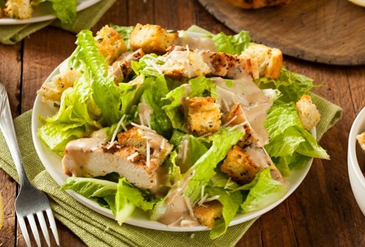

Chicken Caesar salad
Chicken ingredients:
- Chicken breast without skin and bone
- 1 tablespoon olive oil
- 1/4 tablespoon salt
- Small pinch of black pepper, garlic powder, onion powder, dried oregano, paprika
Chicken ingredients:
- Chicken breast without skin and bone
- 1 tablespoon olive oil
- 1/4 tablespoon salt
- Small pinch of black pepper, garlic powder, onion powder, dried oregano, paprika
Salad Ingredients:
- Five washed leaves of lettuce
- A grain of orange peeled and chopped
- Five grapes
- 1/4 cup lemon juice
- 2 tablespoons olive oil
- A little salt
- Mashed clove of garlic
Steps :
Chicken preparation:
Grease the chicken piece with a little olive oil. Sprinkle salt, black pepper, garlic, onions and oregano,
then place in the oven tray after wrapping it in a piece of aluminum paper. Insert the tray into a hot oven for no more than ten minutes,
then turn it to the second side and leave it for an additional ten minutes. Leave the grilled chicken to cool, then cut it into circular slices
Prepare the sauce:
Mix lemon juice with olive oil. Add garlic and salt
Prepare salad:
Chop the lettuce leaves, mixing them with slices of both oranges, chicken, and grapes. Pour the prepared sauce, stirring a little